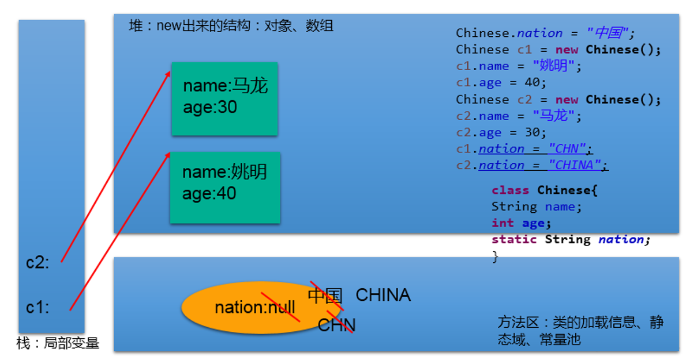

Java 之关键字的使用
java 中有很多的关键字，他们的使用让 Java 语言变得更加灵活、易用，下面将介绍 Java 中最常用的几个关键字并说明其用法。
一、关键字：return-- 跳出
- 使用在方法体中，用于：① 结束方法② 针对于返回值类型的方法，使用 "return 数据" 方法返回所要的数据。
- return 关键字后面不可以声明执行语句。
- 在异常处理中 try-catch-finally 的结构中，如果 try 或 catch 中的结构中写了 return，但是 finally 中的结构仍会执行。
二、关键字：this-- 本类的
1.this 关键字概述
this 理解为：当前对象 或 当前正在创建的对象，可以调用的结构：属性、方法；构造器
2. this 关键字的使用
2.1 this 调用属性、方法：
- 在类的方法中，我们可以使用 "this. 属性" 或 "this. 方法" 的方式，调用当前对象属性或方法。但是，通常情况下，我们都择省略 "this."。特殊情况下，如果 方法的形参和类的属性同名时 ，我们必须显式的使用 "this. 变量" 的方式，表明此变量是属性，而非形参。
- 在类的构造器中，我们可以使用 "this. 属性" 或 "this. 方法" 的方式，调用当前正在创建的对象属性或方法。但是，通常情况下，我们都择省略 "this."。特殊情况下，如果 构造器的形参和类的属性同名 时，我们必须显式的使用 "this. 变量" 的方式，表明此变量是属性，而非形参。
2.2 this 调用构造器：
① 我们在类的构造器中，可以显式的使用 "this(形参列表)" 方式，调用本类中指定的其他构造器
② 构造器中不能通过 "this(形参列表)" 方式调用自己
③ 如果一个类中有 n 个构造器，则最多有 n - 1 构造器中使用了 "this(形参列表)"
④ 规定："this(形参列表)" 必须声明在当前构造器的首行
⑤ 构造器内部，最多只能声明一个 "this(形参列表)"，用来调用其他的构造器
三、关键字：super-- 父类的
1. super 关键字概述
super 关键字可以理解为：父类的，可以用来调用的结构：属性、方法、构造器
- 尤其当子父类出现同名成员时，可以用 supe 表明调用的是父类中的成员
- super 的追溯不仅限于直接父类
- super 和 this 的用法相像，this 代表本类对象的引用， super 代表父类的内存空间的标识
2. super 关键字使用
2.1super 调用属性、方法：
与 this 关键字使用方式相同，只不过调用的是父类的属性
2.2 在子类的方法或构造器中使用
通过使用 "super. 属性" 或 "super. 方法" 的方式，显式的调用父类中声明的属性或方法。但是，通常情况下，我们习惯省略 "super."
特殊情况
- 当子类和父类中定义了同名的属性时，我们要想在子类中调用父类中声明的属性，则必须显式的使用 "super. 属性" 的方式，表明调用的是父类中声明的属性。
- 当子类重写了父类中的方法以后，我们想在子类的方法中调用父类中被重写的方法时，则必须显式的使用 "super. 方法" 的方式，表明调用的是父类中被重写的方法。
2.3 super 调用构造器：
- 我们可以在子类的构造器中显式的使用 "super(形参列表)" 的方式，调用父类中声明的指定的构造器
- "super(形参列表)" 的使用，必须声明在子类构造器的首行！
- 我们在类的构造器中，针对于 "this(形参列表)" 或 "super(形参列表)" 只能二选一，不能同时出现
- 在构造器的首行，没显式的声明 "this(形参列表)" 或 "super(形参列表)"，则默认调用的是父类中空参的构造器：super()
- 在类的多个构造器中，至少一个类的构造器中使用了 "super(形参列表)"，调用父类中的构造器
3. this 与 super 的区别
| 区别点 | this | super |
|---|---|---|
| 访问属性 | 访问本类中的属性，如果本类没有此属性则从父类中继续查找 | 直接访问父类中的属性 |
| 调用方法 | 访问本类中的方法，如果本类没有此方法则从父类中继续查找 | 直接访问父类中的方法 |
| 调用构造器 | 调用本类构造器，必须放在构造器的首行 | 调用父类构造器，必须放在子类构造器的首行 |
四、关键字：package/import
1. package 关键字概述
- 为了更好的实现项目中类的管理，提供包的概念
- 使用 package 声明类或接口所属的包，声明在源文件的首行
- 包，属于标识符，遵循标识符的命名规则、规范 (xxxyyyzzz)、“见名知意”
- 每 "." 一次，就代表一层文件目录。
2. 包结构应用举例
MVC 设计模式

3. JDK 中的主要包介绍：
- java. lang-- 包含一些 Java 语言的核心类，如 String、Math、 integer、 System 和 Thread，提供常用功能
- java. net-- 包含执行与网络相关的操作的类和接口
- java.io-- 包含能提供多种输入 / 输出功能的类
- java util-- 包含一些实用工具类，如定义系统特性、接口的集合框架类、使用与日期日历相关的函数。
- java. text-- 包含了一些 java 格式化相关的类
- java.sql-- 包含了 java 进行 JDBC 数据库编程的相关类 / 接口
- java. awt-- 包含了构成抽象窗口工具集 (abstract window toolkits）的多个类，这些类被用来构建和管理应用程序的图形用户界面 GU）。 B/S C/S
4. import 的使用：
- 在源文件中显式的使用 import 结构导入指定包下的类、接口
- 声明在包的声明和类的声明之间
- 如果需要导入多个结构，则并列写出即可
- 可以使用 "xxx.*" 的方式，表示可以导入 xxx 包下的所结构
- 如果使用的类或接口是 java.lang 包下定义的，则可以省略 import 结构
- 如果使用的类或接口是本包下定义的，则可以省略 import 结构
- 如果在源文件中，使用了不同包下的同名的类，则必须至少一个类需要以全类名的方式显示。
- 使用 "xxx.*" 方式表明可以调用 xxx 包下的所结构。但是如果使用的是 xxx 子包下的结构，则仍需要显式导入
- import static: 导入指定类或接口中的静态结构: 属性或方法。
五、关键字：static-- 静态的
1. Static 关键字简述
主要用来修饰类的内部结构，如：属性、方法、代码块、内部类
2. static 关键字使用
2.1static 修饰属性：静态变量（或类变量）
属性是否使用 static 修饰，可分为：静态属性 vs 非静态属性 (实例变量)
- 实例变量：我们创建了类的多个对象，每个对象都独立的拥一套类中的非静态属性。当修改其中一个对象中的非静态属性时，不会导致其他对象中同样的属性值的修改。
- 静态变量：我们创建了类的多个对象，多个对象共享同一个静态变量。当通过某一个对象修改静态变量时，会导致其他对象调用此静态变量时，是修改过了的。
static 修饰属性的其他说明：
- 静态变量随着类的加载而加载。可以通过 "类. 静态变量" 的方式进行调用
- 静态变量的加载要早于对象的创建。
- 由于类只会加载一次，则静态变量在内存中也只会存在一份：存在方法区的静态域中。
| 类变量 | 实例变量 | |
|---|---|---|
| 类 | yes | no |
| 对象 | yes | yes |
静态属性举例：System.out; Math.PI;
静态变量内存解析：

2.2 static 修饰方法：静态方法、类方法
- 随着类的加载而加载，可以通过 "类. 静态方法" 的方式进行调用
- 静态方法中，只能调用静态的方法或属性
- 非静态方法中，既可以调用非静态的方法或属性，也可以调用静态的方法或属性
| 静态方法 | 非静态方法 | |
|---|---|---|
| 类 | yes | no |
| 对象 | yes | yes |
使用的注意点：
- 在静态的方法内，不能使用 this 关键字、super 关键字
- 关于静态属性和静态方法的使用，大家都从生命周期的角度去理解。
2.3. 如何判定属性和方法应该使用 static 关键字：
关于属性：
- 属性是可以被多个对象所共享的，不会随着对象的不同而不同的。
- 类中的常量也常常声明为 static
关于方法：
- 操作静态属性的方法，通常设置为 static 的
- 工具类中的方法，习惯上声明为 static 的。 比如：Math、Arrays、Collections
使用举例：记录创建的圆的个数
class Circle{
private double radius;
private int id;//自动赋值
public Circle(){
id = init++;
total++;
}
public Circle(double radius){
this();
// id = init++;
// total++;
this.radius = radius;
}
private static int total;//记录创建的圆的个数
private static int init = 1001;//static声明的属性被所对象所共享
public double findArea(){
return 3.14 * radius * radius;
}
public double getRadius() {
return radius;
}
public void setRadius(double radius) {
this.radius = radius;
}
public int getId() {
return id;
}
public static int getTotal() {
return total;
}
}
3. 单例模式
3.1 设计模式的说明
设计模式是在大量的实践中总结和理论化之后优的代码结构、编程风格、以及解决问题的思考方式。
常用设计模式 --- 23 种经典的设计模式 GOF
- 创建型模式，共 5 种：工厂方法模式、抽象工厂模式、单例模式、建造者模式、原型模式。
- 结构型模式，共 7 种：适配器模式、装饰器模式、代理模式、外观模式、桥接模式、组合模式、享元模式。
- 行为型模式，共 11 种：策略模式、模板方法模式、观察者模式、迭代器模式、责任链模式、命令模式、备忘录模式、状态模式、访问者模式、中介者模式、解释器模式。
3.2 单例模式
所谓类的单例设计模式，就是采取一定的方法保证在整个的软件系统中，对某个类只能存在一个对象实例。
代码实现：
饿汉式1：
class Bank{
//1.私化类的构造器
private Bank(){
}
//2.内部创建类的对象
//4.要求此对象也必须声明为静态的
private static Bank instance = new Bank();
//3.提供公共的静态的方法，返回类的对象
public static Bank getInstance(){
return instance;
}
}
饿汉式2：使用了静态代码块
class Order{
//1.私化类的构造器
private Order(){
}
//2.声明当前类对象，没初始化
//4.此对象也必须声明为static的
private static Order instance = null;
static{
instance = new Order();
}
//3.声明public、static的返回当前类对象的方法
public static Order getInstance(){
return instance;
}
}
//懒汉式：
class Order{
//1.私化类的构造器
private Order(){
}
//2.声明当前类对象，没初始化
//4.此对象也必须声明为static的
private static Order instance = null;
//3.声明public、static的返回当前类对象的方法
public static Order getInstance(){
if(instance == null){
instance = new Order();
}
return instance;
}
}
两种方式的对比：
- 饿汉式：上来就创建对象
- 坏处：对象加载时间过长。
- 好处：饿汉式是线程安全的
- 懒汉式：什么时候用什么时候造对象
- 好处：延迟对象的创建。
- 目前的写法坏处：线程不安全。---> 到多线程内容时，再修改
六、关键字：final-- 最终的
可以用来修饰：类、方法、变量
- final 用来修饰一个类: 此类不能被其他类所继承。
比如：String 类、System 类、StringBuffer 类
- final 用来修饰方法：表明此方法不可以被重写
比如：Object 类中 getClass();
-
final 用来修饰变量：此时的 "变量" 就称为是一个常量
-
final 修饰属性：可以考虑赋值的位置：显式初始化、代码块中初始化、构造器中初始化
-
final 修饰局部变量：尤其是使用 final 修饰形参时，表明此形参是一个常量。当我们调用此方法时，给常量形参赋一个实参。一旦赋值以后，就只能在方法体内使用此形参，但不能进行重新赋值。
-
static final 用来修饰属性：全局常量
七、关键字：abstract-- 抽象的
1. abstract 关键字简述
abstract: 抽象的，可以用来修饰：类、方法
2. abstract 关键字的使用
2.1 abstract 修饰类：抽象类
- 此类不能实例化
- 抽象类中一定有构造器，便于子类实例化时调用（涉及：子类对象实例化的全过程）
- 开发中，都会提供抽象类的子类，让子类对象实例化，完成相关的操作 ---> 抽象的使用前提：继承性
2.2 abstract 修饰方法：抽象方法
- 抽象方法只方法的声明，没方法体
- 包含抽象方法的类，一定是一个抽象类。反之，抽象类中可以没有抽象方法的。
- 若子类重写了父类中的所的抽象方法后，此子类方可实例化
- 若子类没重写父类中的所的抽象方法，则此子类也是一个抽象类，需要使用 abstract 修饰
注意点：
- abstract 不能用来修饰：属性、构造器等结构
- abstract 不能用来修饰私有方法、静态方法（静态方法不能被重写，抽象方法不能调用）、final 的方法、final 的类
abstract 的应用举例：
举例一
public abstract class Vehicle{//抽象类
public abstract double calcFuelEfficiency();//计算燃料效率的抽象方法
public abstract double calcTripDistance();//计算行驶距离的抽象方法
}
public class Truck extends Vehiclel{
public double calcFuelEfficiency( ){//写出计算卡车的燃料效率的具体方法}
public double calcTripDistance( ){//写出计算卡车行驶距离的具体方法}
}
public class River Barge extends Vehicle{
public double calcFuelEfficiency( ){//写出计算驳船的燃料效率的具体方法}
public double calcTripDistance( ){//写出计算驳船行驶距离的具体方法}
}
举例二
abstract class GeometricObject{//抽象类
public abstract double findArea();
}
class Circle extends GeometricObject{
private double radius;
public double findArea(){
return 3.14 * radius * radius;
};
}
举例三：
IO 流中设计到的抽象类：InputStream/OutputStream / Reader /Writer。在其内部定义了抽象的 read()、write() 方法。
3. 模板方法的设计模式
3.1 解决的问题
在软件开发中实现一个算法时，整体步骤很固定、通用，这些步骤已经在父类中写好了。但是某些部分易变，易变 部分可以抽象出来，供不同子类实现。这就是一种模板模式。
3.2 应用举例
abstract class Template{
//计算某段代码执行所需要花费的时间
public void spendTime(){
long start = System.currentTimeMillis();
this.code();//不确定的部分、易变的部分
long end = System.currentTimeMillis();
System.out.println("花费的时间为：" + (end - start));
}
public abstract void code();
}
class SubTemplate extends Template{
@Override
public void code() {
for(int i = 2;i <= 1000;i++){
boolean isFlag = true;
for(int j = 2;j <= Math.sqrt(i);j++){
if(i % j == 0){
isFlag = false;
break;
}
}
if(isFlag){
System.out.println(i);
}
}
}
}
3.3 应用场景
模板方法设计模式是编程中经常用得到的模式。各个框架、类库中都有他的影子，比如常见的有：
- 数据库访问的封装
- Junt 单元测试
- JavaWeb 的 Servlet 中关于 doGet/doPost 方法调用
- Hibernate 中模板程序
- Spring 中 JDBCTemlate、 Hibernate Template 等
八、关键字：interface-- 接口
1.interface 关键字简述
- 接口使用 interface 来定义
- Java 中，接口和类是并列的两个结构
1.interface 关键字使用说明：
-
如何定义接口：定义接口中的成员
-
接口中不能定义构造器的！意味着接口不可以实例化
-
Java 开发中，接口通过让类去实现 (implements) 的方式来使用.
-
如果实现类覆盖了接口中的所抽象方法，则此实现类就可以实例化
-
如果实现类没覆盖接口中所的抽象方法，则此实现类仍为一个抽象类
-
Java 类可以实现多个接口 ---> 弥补了 Java 单继承性的局限性
格式：class AA extends BB implements CC,DD,EE
-
接口与接口之间可以继承，而且可以多继承
-
接口的具体使用，体现多态性
-
接口，实际上可以看做是一种规范
使用举例：不同的设备通过 USB 口接入电脑
class Computer{
public void transferData(USB usb){//USB usb = new Flash();
usb.start();
System.out.println("具体传输数据的细节");
usb.stop();
}
}
interface USB{
//常量：定义了长、宽、最大最小的传输速度等
void start();
void stop();
}
class Flash implements USB{
@Override
public void start() {
System.out.println("U盘开启工作");
}
@Override
public void stop() {
System.out.println("U盘结束工作");
}
}
class Printer implements USB{
@Override
public void start() {
System.out.println("打印机开启工作");
}
@Override
public void stop() {
System.out.println("打印机结束工作");
}
}
使用总结
- 接口使用上也满足多态性
- 接口，实际上就是定义了一种规范
- 开发中，体会面向接口编程！
2. 面向接口编程的思想
面向接口编程：我们在应用程序中，调用的结构都是 JDBC 中定义的接口，不会出现具体某一个 数据库厂商的 API。
3. Java8 中关于接口的新规范
-
JDK7 及以前：只能定义全局常量和抽象方法
-
全局常量：public static final 的，书写时可以省略不写
-
抽象方法：public abstract 的
-
JDK8：除了定义全局常量和抽象方法之外，还可以定义静态方法、默认方法
-
Java8 中，可以为接口添加静态方法和默认方法。从技术角度来说，这是完全合法的，只是它看起来违反了接口作为一个抽象定义的理念。
-
静态方法：使用 static 关键字修饰。
可以通过接口直接调用静态方法，并执行其方法体。我们经常在相互一起使用的类中使用静态方法。你可以在标准库中找到像 Collection/co| ections 或者 Path/ Paths 这样成对的接口和类。
-
默认方法：默认方法使用 default 关键字修饰。
-
可以通过实现类对象来调用。我们在已有的接口中提供新方法的同时，还保持了与旧版本代码的兼容性比如：java8API 中对 Collection、List、 Comparator 等接口提供了丰富的默认方法。
JDK 8 后接口使用总结
-
知识点 1：接口中定义的静态方法，只能通过接口来调用。
-
知识点 2：通过实现类的对象，可以调用接口中的默认方法。
如果实现类重写了接口中的默认方法，调用时，仍然调用的是重写以后的方法
-
知识点 3：如果子类 (或实现类) 继承的父类和实现的接口中声明了同名同参数的默认方法，那么子类在没重写此方法的情况下，默认调用的是父类中的同名同参数的方法。-->类优先原则
-
知识点 4：如果实现类实现了多个接口，而这多个接口中定义了同名同参数的默认方法，
那么在实现类没重写此方法的情况下，报错。--> 接口冲突。
这就需要我们必须在实现类中重写此方法
- 知识点 5：如何在子类 (或实现类) 的方法中调用父类、接口中被重写的方法
public void myMethod(){
method3();//调用自己定义的重写的方法
super.method3();//调用的是父类中声明的
//调用接口中的默认方法
CompareA.super.method3();
CompareB.super.method3();
}
4. 面试题：
抽象类和接口的异同？ 相同点：都不能实例化；都可以被继承；都可以包含抽象方法的。
不同点：
抽象类：有构造器。接口：没有构造器
1）把抽象类和接口 (java7,java8,java9) 的定义、内部结构解释说明
2）类：单继承性 接口：多继承
类与接口：多实现
5. 代理模式
5.1. 解决的问题
代理模式是 Java 开发中使用较多的一种设计模式。代理设计就是为其他对象提供一种代理以控制对这个对象的访问。
代码示例
interface NetWork{
public void browse();
}
//被代理类
class Server implements NetWork{
@Override
public void browse() {
System.out.println("真实的服务器访问网络");
}
}
//代理类
class ProxyServer implements NetWork{
private NetWork work;
public ProxyServer(NetWork work){
this.work = work;
}
public void check(){
System.out.println("联网之前的检查工作");
}
@Override
public void browse() {
check();
work.browse();
}
}
5.2 应用场景
- 安全代理：屏蔽对真实角色的直接访问
- 远程代理：通过代理类处理远程方法调用（RM）
- 延迟加载：先加载轻量级的代理对象，真正需要再加载真实对象 比如你要开发一个大文档查看软件，大文档中有大的图片，有可能一个图片有 100MB，在打开文件时，不可能将所有的图片都显示出来，这样就可以使用代理模式，当需要查看图片时，用 proxy 来进行大图片的打开。
5.3 分类
- 静态代理（静态定义代理类）
- 动态代理（动态生成代理类）JDK 自带的动态代理，需要反射等知识
6. 工厂的设计模式
解决的问题
实现了创建者与调用者的分离，即将创建对象的具体过程屏蔽隔离起来，达到提高灵活性的目的。
具体模式：
- 简单工厂模式：用来生产同一等级结构中的任意产品。（对于增加新的产品，需要修改已有代码）
- 工厂方法模式：用来生产同一等级结构中的固定产品。（支持增加任意产品)
- 抽象工厂模式：用来生产不同产品族的全部产品。（对于增加新的产品，无能为力；支持增加产品族)
全文完